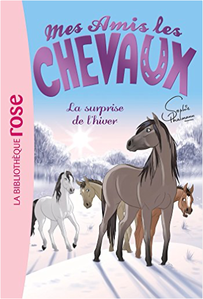

Julien
Collection Total:
2 025 Items
Last Updated:
Dec 25, 2023
Shelf:
Books
Movies
Albums
Videogames
Games
BD
BD Camille
Blu-ray
Business
Camille
Comics
Cooking
Lego
Manga
Pauline
Photography
Star Wars
T'choupi
Travel
TV Shows
Un livre dont vous êtes le héro
Vinyl
Walt Disney
10
11
12
13
14
mes amis les chevaux, tome 1 - un nouveau pensionnaire
sophie thalmann
2012036740
mes amis les chevaux, tome 2 - la grande compétition
sophie thalmann
2012039685
mes amis les chevaux, tome 3 : un choix difficile
sophie thalmann
2012041906
mes amis les chevaux, tome 4 - un rival inattendu
sophie thalmann
2012044174
mes amis les chevaux, tome 5 - une randonnée mouvementée
sophie thalmann
2012044948
mes amis les chevaux, tome 6 : une rencontre inoubliable
sophie thalmann
2012045383

mes amis les chevaux, tome 7 - la surprise de l'hiver
sophie thalmann
2012045340
mes amis les chevaux, tome 8 : le loup solitaire
sophie thalmann
2014018324
mes amis les chevaux, tome 9 : sous le feu des projecteurs
sophie thalmann
2012526683
mes amis les chevaux, tome 10 - le concours de beauté
sophie thalmann
2011809991
mes amis les chevaux, tome 11 - peur sur l'écurie
sophie thalmann, natacha godeau
2012317340
mes amis les chevaux, tome 12 : mystère au centre équestre
sophie thalmann
2012318681
mes amis les chevaux, tome 13 : moustique a mal aux dents !
sophie thalmann
2011614716
mes amis les chevaux, tome 14 - une journée à la mer
sophie thalmann
2011956722
10
11
12
13
14

 Made with Delicious Library
Made with Delicious Library